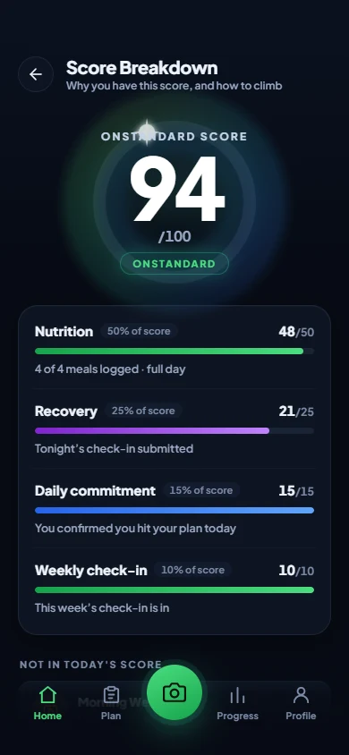
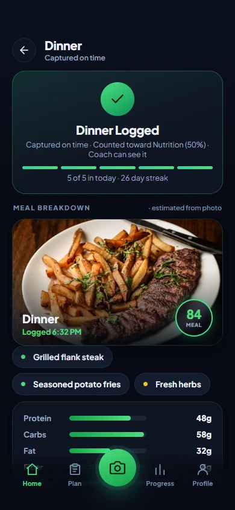
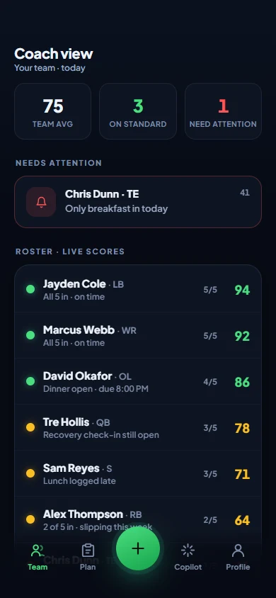
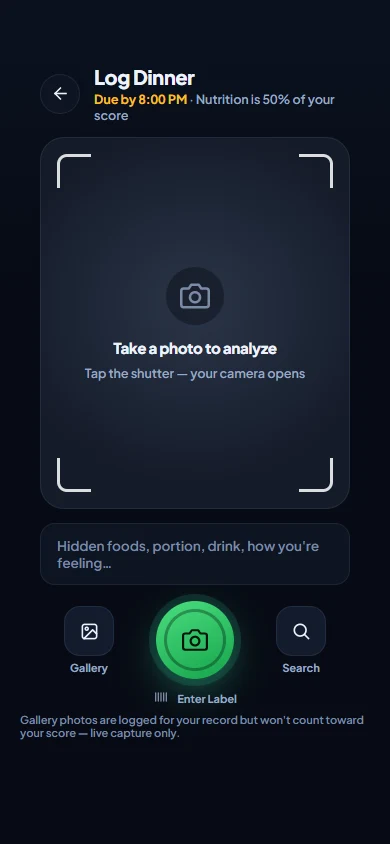
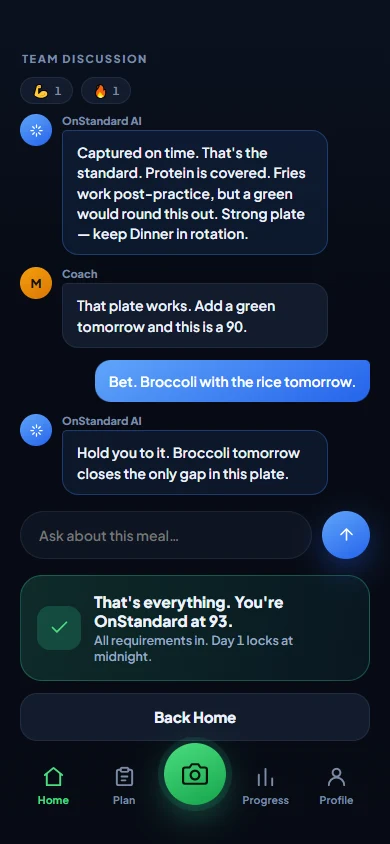

Coach
The whole roster in three seconds. Who's on standard, who's slipping, who needs attention before the week is lost.
Your roster, at a glance.
For athletes, clients, and the people who hold them to it
A coach, trainer, or dietitian sets your standard. You prove it every day: meals, recovery, check‑ins. One honest score, live to the people invested in you.
Free for athletes and clients. A coach, trainer, or program brings you on.
How it works
A coach, trainer, or dietitian sets the plan: protein target, meal windows, recovery check‑ins, weigh‑in days. The platform owns the scoring math, so a standard means the same thing on every roster. No coach can inflate it. No athlete can lobby it.

Point the camera at the plate. The meal is read, matched against the plan, and counted while it's still warm. Recovery and commitment take one honest minute. Late still counts, for half. Skipped reads as skipped.


The coach scans the whole roster in three seconds: who's on standard, who's slipping, who needs a hand today. Trainers see their whole client book the same way, so the one going quiet gets a call before a cancellation. Parents see their kid's day without seeing their DMs.

Meal logging, step by step
No barcode hunting, no 40‑field forms, no guessing grams. The camera is the log, and honesty is enforced by design.


Those four rules are the whole trust model. A plate you actually ate, photographed when you ate it, counted while it's warm. That's why a coach believes the number.
The intelligence
Most fitness AI wants to be your coach. Ours works for yours.
Meal photos become foods, portions, and macros in seconds. Every detection carries a confidence level, and low confidence is shown, not hidden. An allergen check runs on every plate.
Every log opens a group chat: the AI's honest read first, then your coach or trainer, then you. Ask it anything; it answers from your plan, your day, your last week of plates, not from the internet.
The AI never sets your targets, never touches the score, and never invents a number for a person to act on. Fixed math scores the day. Your coach sets the bar. The AI phrases, explains, and holds you to it.
Copilot answers the questions a coach actually asks: who needs attention, who's improving, what changed this week, without the coach opening fifteen profiles.
One number, protected
Four inputs. Fixed weights. The score is the percentage of the plan that actually got done today, and it cannot be sweet‑talked.
Protein hit and meals logged on time, read from photo proof.
Sleep, energy, soreness. Counts only when a real check‑in backs it.
Did you do what you said this morning? One question, answered honestly.
The longer conversation: weight trend, how the week actually went.
An incomplete day reads as incomplete. That's the point: when a coach sees an 84, it means 84. So the one day it says 96, it means that too.
Why now
Money follows proof. Programs, collectives, and brands don't bet on talk; they bet on the athlete who can show the work behind the highlight tape. And the bar doesn't stop where the money starts. It reaches every level:
No money yet, just the bar moving down. Habits that used to start in college now start in eighth grade, and the kid with a year of honest days walks into high school already trusted.
NIL is legal for high schoolers in most states, and college rosters got smaller under the settlement. Every offer is an investment decision now, and proof of daily work is the safest thing a recruit can show.
The portal never closes and the money is on the table: NIL, rev share, retention. Staffs are deciding who's worth paying. The one part of that case an athlete fully controls is the daily work, provable.
Pro organizations have always bet on bodies of work over workout warriors. Now a body of work can be literal: every plate, every check‑in, every day the standard held.
Talent gets you noticed.
A record gets you trusted.
Built to be believed
Who it's for
The interface never changes: Today, Log, Progress, Team. What changes is the intelligence underneath: the targets, the coaching language, and what counts toward the score adapt to who you are and what you're chasing.


The whole roster in three seconds. Who's on standard, who's slipping, who needs attention before the week is lost.
Your roster, at a glance.
Every client's compliance between sessions, athlete or not. The one going quiet gets a call before they become a cancellation.
Your book, accountable.
Real visibility without hovering: the score, the streak, the trend. Scoped to what helps, never their private threads.
Your kid, actually on track.
The record follows the person, not the program. Change schools, change trainers, graduate, go pro: every logged day of your history moves with you. It's a track record no tryout can fake, and no program can take. When the call comes, the receipts already exist.
Pricing
Brought on by a coach, trainer, or program. Full app, full AI, full history. Your record stays yours forever, even after you leave.
For trainers, RDs & private coaches
Your whole book on one live roster, up to 50 clients included. See compliance between sessions; keep the clients you'd otherwise lose.
Teams, schools, and performance gyms, from 30 to 150+ active athletes. You pay only for athletes who actually use it; idle seats free up automatically.
Opening pricing. Founding partners: the first 50 coaches and facilities lock 50% off for 12 months, grandfathered so a later price rise never touches them.
Straight answers
Yes. You never pay while you're attached to a coach, trainer, or program; they carry the cost because they get the value. If you ever leave, your record doesn't vanish; it's yours, and you can keep it live.
Three jobs. It reads meal photos into foods, portions, and macros, with a confidence level on every detection. It opens every log with an honest read and answers your questions in the team thread, using your plan, your day, and your recent meals as context. And it briefs coaches: who needs attention, who's improving, what changed.
It never sets your targets, never calculates the score (fixed, published math does that), never invents a number when it's unsure, and never stands in for your coach's judgment. It's the amplifier, not the authority.
No. A coach sets the plan: targets, windows, requirements, all within evidence‑based rails. The formula is the platform's and it's the same for everyone, so an 84 means the same thing on every roster in the country. That's what makes the number worth citing.
Yes. The screens stay the same; the brain changes. A fat‑loss client, a marathoner, and a linebacker each get targets, coaching language, and score inputs that match their goal, and you see your whole mixed book on one roster.
Only the people the athlete (or their family) connects: a coach or trainer sees the day's execution; parents get a scoped view of the score and trends, never private threads. For minors, access requires verified guardian consent and is denied by default until it exists. Data is never sold.
Nothing is lost. The record belongs to the athlete, so it moves with them: a new program sees the history from day one, and the athlete can keep their record live on their own. Organizations get access while the relationship lasts, never ownership.
No. We don't broker deals, value athletes, or take a cut of anything. We build the thing every serious opportunity quietly depends on: proof that the work gets done, day after day, in a record that belongs to the athlete. Who you show it to is up to you.
All of them. Nutrition, recovery, and commitment are universal; the plan adapts to the season and the training schedule. If someone you trust sets a standard, OnStandard can hold it, on a field, on a court, in a pool, or on a Tuesday‑night treadmill.
Coaches, trainers, and facilities: set your first standard tonight. Your roster lights up as they log.